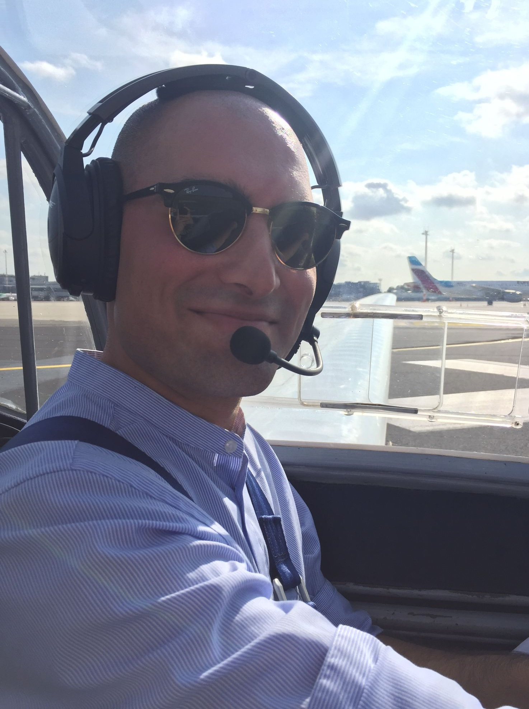

I am currently pursuing a Bachelor of Science in Industrial Engineering with a specialization in Information Engineering at the Rhine-Waal University of Applied Sciences. My bachelor thesis focuses on econometrics, specifically investigating the impact of economic freedom on economic growth within the European Economic Area. Additionally, I am working towards earning the Google Advanced Data Analytics Professional Certificate to further enhance my data analysis capabilities.
Please feel free to contact me through any of the provided links or directly via my email at Cosroe@proton.me.
